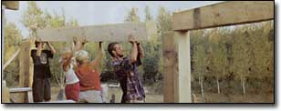
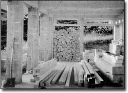
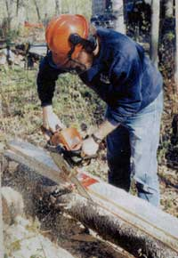
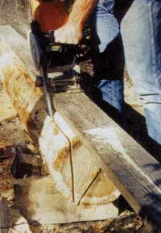

Many natural building methods - such as straw bale, cordwood masonry and cob building - benefit from timber-frame construction primarily because these methods can involve infilling between the timbers that make up the building’s structural framework. Unlike conventional 2-by-4 stick framing, the center-to-center spacing of timber-frame posts is somewhere between 6 and 10 feet. This makes infilling much less tedious; imagine trying to fill the narrow spaces in regular stick construction with cordwood masonry or straw bales.
Also, there is a great practical advantage in erecting a timber frame first - getting the roof on as a protective umbrella, and then infilling the structure using one or more of these natural building methods.
Yes, you can accomplish all this with “traditional” wood-on-wood - such as mortise-and-tenon and dovetail - joining methods. But these methods require intricate cuts and exact measurements, and to do it right, a great deal of time and study must be expended, and there are a few specialized tools that need to be purchased. The reality is that most farmers, contractors and owner-builders use methods of timber framing (also called post-and-beam) that they have simply picked up from colleagues, relatives or neighbors. With the advent of relatively inexpensive mechanical fasteners, most builders - contractors and owner-builders alike - rely on other methods of joining, using truss plates, screws and bolts, pole-barn nails and even gravity.
Whether you go with traditional timber framing or (modern) “timber framing for the rest of us,” you will discover certain advantages and disadvantages in both systems.
To learn more about timber framing, we recommend Timber Framing for the Rest of Us by Rob Roy, a Mother Earth News Book for Wiser Living from New Society Publishers.
There is an alternative timber procurement strategy for those with access to a stand of large, straight trees: Make the timbers yourself with a chain saw mill. Essentially, this type of mill is an attachment to a chain saw. There are several different styles and qualities, and costs vary. Here are some widely available choices (see “Tool Sources,” below, for contact information):
“Making timbers with a chain saw,” above, assumes that you are handy in the woods with the tool, as the first task will be felling the trees and maneuvering them to a clearing where you can work on the trunks. If you are not already an expert at wood crafts, have someone who is teach you how to operate the saw safely and how to take down trees, and avoid working alone. Even better, take a course in chain saw operation and safety. I learned by necessity, but after about 10 years of experience, I cut through a log and the tip of the saw kicked back on some hard object below. The bar, with the chain still moving, kicked back, too, and bounced off my nose. It took a skilled plastic surgeon to make me into the good-looking guy I am today.
You should always wear safety chaps to protect your legs and body, and safety helmets for eye, ear and head protection. My son and I share a set of chaps, and, yes, they have been grazed on occasion. The reality is that chain saws, handled incorrectly, can maim or kill, and so they must be treated with respect and vigilant concentration.
Having said all that, people comfortable with a chain saw can use these chain saw mills to provide all the lumber they need, if they’ve got the trees. In a wooded building site, just clearing the house site itself, and a driveway to it, will often yield enough material to build a house. Just be careful out there!
I tested the Beam Machine and the Granberg Mini-Mill, both inexpensive chain saw milling guides, and can offer the following comments:
I already owned a Beam Machine, and friend Bruce Kilgore owned a Granberg Mini-Mill. On the advice of the inventor of the Beam Machine, Ted Mather, I used an ordinary crosscut chain, not the special ripping chain recommended by most other chain saw mill manufacturers, to test the Beam. The regular chain, Mather says, gives a much smoother cut.
According to Granberg International, the regular stock chain on a saw works well when it is sharpened correctly. All top angles must be the same uniform angle (choose from 25, 30 or 35 degrees) and depth gauges must be at the same height, (no more than thirty-five-thousandths of an inch below the cutting edge of the tooth).
For better ripping results, the company advises that you resharpen your stock chain to a zero-degree top plate angle from the 25-, 30- or 35-degree angle mentioned above.
The zero-degree top plate angle reduces the power needed to rip and produces smoother lumber than a regular stock chain, although an ordinary chain, even with the specialty sharpening, does not work as well as a Granberg Ripping Chain.
Some friends and I conducted our test with a machine-sharpened crosscut saw - regular sharpening - as per Mather’s advice. Our test logs were balsam fir, about 12 inches in diameter and 8 feet in length.
First, we tried the Beam Machine, which requires that an ordinary (finished) 2-by-4 be screwed along the length of the log as a guide for the first cut. We propped the log up on a couple of shorter logs so the tip of the 18-inch bar on my Stihl 029 chain saw was well clear of the ground.
The Beam Machine is simply a 12-inch-long piece of channel iron welded to a pivoting mechanism that clamps onto the chain saw’s bar with two strong setscrews. The channel iron fits neatly to the 2-by-4 that has been fastened along the log’s length. The mechanism allows the operator to import a vertical and straight cut as the unit slides along the 2-by-4 guide track. We found we could rip the first slab off the edge of a log in three minutes.
After the first slab was cut away, we had a nice flat surface for remounting the 2-by-4 guide. The Beam Machine must always travel along the guide. We simply rotated the log by 90 degrees so that we could work vertically once again on the adjacent (second) cut.
We marked the small end of the log with a pencil, showing the square 8-by-8 cross section of the beam that we wanted to make. Just before beginning a cut, we would barely tickle the end of the log with the saw to find out if we would, indeed, be cutting on the correct - outer - side of our line. On the second cut, I failed to keep the metal guide firmly on the 2-by-4 track and the saw came out of the other end of the log almost an inch out of plumb.
On the first test log, we also tried the Granberg Mini-Mill, which operates on the same principle but uses a 2-by-6 guide instead of a 2-by-4. Combined with a superior bearing for a pivot mechanism, the Granberg on its wider track seemed easier to keep on a straight vertical line. As we used the same saw, there was no difference in the time it took to make a cut. In four cuts, we had a passable 8-by-8 post or beam, except that - thanks to my inexperience on the second cut - the last 3 feet of one end took a decided turn, so the cross section of that end is an inch out of square. Well, it would do as a post!
We made a nearly perfect 8-by-9 beam out of the next log, again using both machines. All dimensions were within a quarter-inch. Again, the $80 Granberg was easier to control than the $40 Beam Machine. In fairness, I think that with practice, an operator can do an adequate job with the less-expensive tool, but if I were cutting a number of heavy timbers for a job, I’d say it’s probably worth the extra money for the Mini-Mill.
All told, with experience, a sharp chain and an adequately powerful saw, it should be possible to make an 8- to 10-foot timber every half hour with either of these simple chain saw attachments.
Bailey’s
(800) 322-4539
www.baileys-online.com
Family-run mail-order company with a selection of chain saws, safety equipment and portable sawmills.
Beam Machine
(800) 609-2160 (U.S. only)
(250) 384-9210
www.beammachine.com
Ted Mather makes the inexpensive Beam Machine chain saw attachment.
Better Built Corporation
(978) 657-5636
www.ripsaw.com
Makes and supplies the Better Built Ripsaw, a bandsaw attachment.
Granberg International
(866) 233-6499
www.granberg.com
Makes the Granberg Mini-Mill, Small Log Mill and various Alaskan mills.
Logosol, Inc.
(877) 564-6765
www.logosolusa.com
Makes the Logosol Timber Jig.
|
 COURTESY ROB ROY Ease of construction and strength of structure are a couple of the advantages of timber-frame building. |
 COURTESY NSP You can make your own lumber using a chain saw. |
 COURTESY ROB ROY Doug Kerr cuts a slab off a fir log with the Beam Machine. |
|
 COURTESY ROB ROY The Granberg Mini-Mill. |
|
|